远程联机，不折腾端口
内置 Terracotta。一个人创建房间，另一个人输入房间号加入，不需要公网 IP，也不用在路由器上做端口映射。
双方需要同一个游戏版本。
FRIEND-BUILT · FOR DISTANT FRIENDS
一个为远程联机准备的 Minecraft 启动器。选版本、装整合包、开房间；v0.8.1 起皮肤保存不再丢透明底，主题与角色皮肤可以直接从下载站装进启动器。
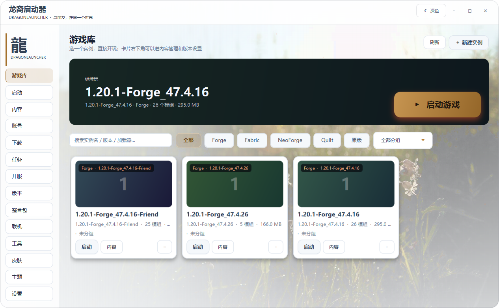
不是又一个启动器
龙裔启动器由朋友自制，原本只是给自己人用。我们把两个版本的能力拼在一起：他补 Java 扫描、JVM 调优、崩溃分析、依赖补齐和更新器；我们补下载器、运行时、native、加载器，以及这一版的主题库。
它到底能做什么
内置 Terracotta。一个人创建房间，另一个人输入房间号加入，不需要公网 IP，也不用在路由器上做端口映射。
双方需要同一个游戏版本。
原版、Forge、Fabric、NeoForge 的库和 native 由启动器下载。下载器改成官方源优先、镜像回退，并给连接和读取都加了超时。
依赖下载失败时会给出具体文件。
从自带 Java、JAVA_HOME、注册表、常见目录和 PATH 五处扫描，按版本与位数挑最合适的；JVM 参数用 Aikar's Flags，内存越大 region 越大。
找不到合适的 Java 才自动下载。
读取本次生成的崩溃报告，提取 Description、异常、Caused by 链和 Mod ID，覆盖 14 类常见错误，给出能照着做的处理步骤。
日志保留在安装目录的 logs 文件夹。
扫描 mods 里的 depends，到 Modrinth 找当前游戏版本和加载器对应的文件；主模组已内置的依赖不会误报缺失。
需要联网，通常 2–10 秒。
“主题”页固定三套本地主题，选中就换背景和配色；右上角可以切浅色深色。现在一共十二套：三套内置、九套可从下载站或主题页「在线主题库」直接装。
主题包放在启动器目录的 themes 文件夹里。
界面，重新做过
背景是真实摄影，不是 AI 画的龙。浅色模式用白色雾面和深灰蓝文字，深色模式保留照片的层次和暖橙强调；同一套布局，两套对比度都重新校过。v0.8.0 的设置页还改成了实色面板，密集文字不再压在壁纸上。
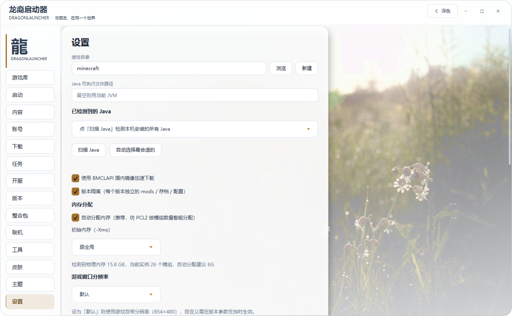
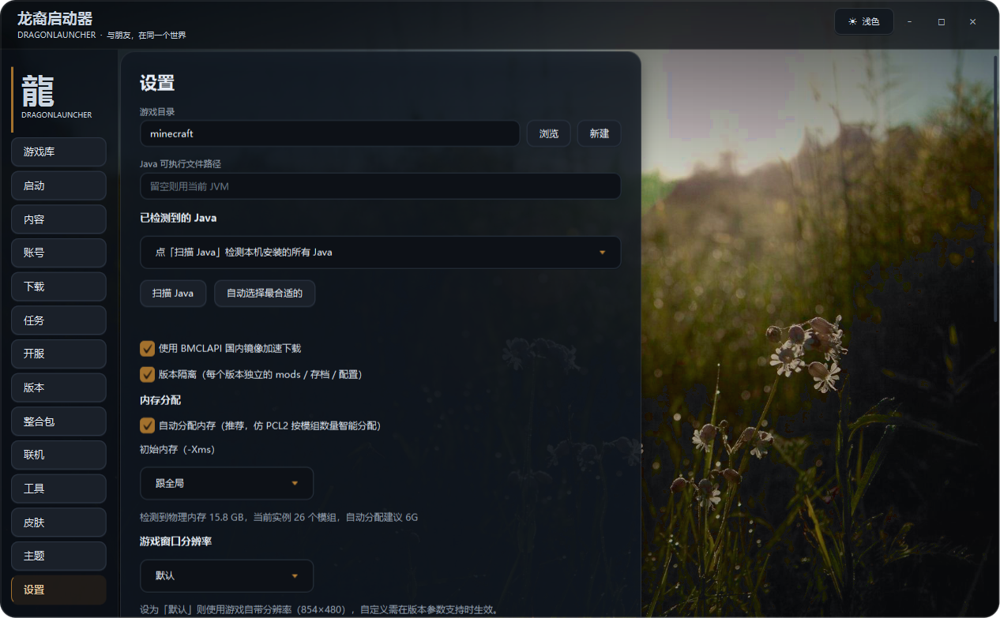
V0.8.0 · WHAT'S NEW
这一版把 v0.7 留下的“说要做但没做”补齐了：分组、初始内存、3D 皮肤、截图编辑、外置登录、英文壳、CurseForge 可选 Key，还有服务端协议级联调。界面上的设置页也重新排过，密集文字不再压在壁纸上。
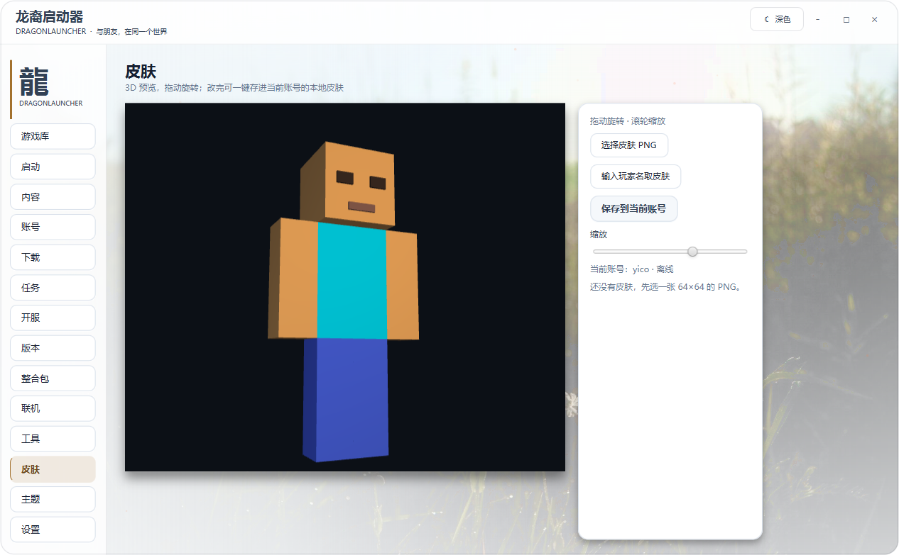
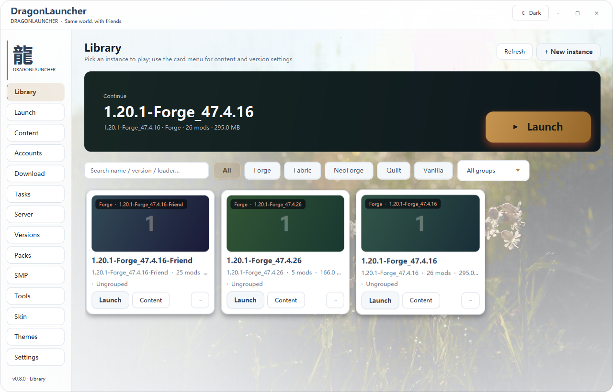
THEME LIBRARY
“主题”页不再是摆设：选一套壁纸，连浅色和深色两套配色一起换。三套固定主题常驻；另外九套（四套 Unsplash 摄影 + 五套原创生成）都在下载站，可以下 zip，也可以在主题页点「在线主题库」直接装——装完立即出现在列表里。
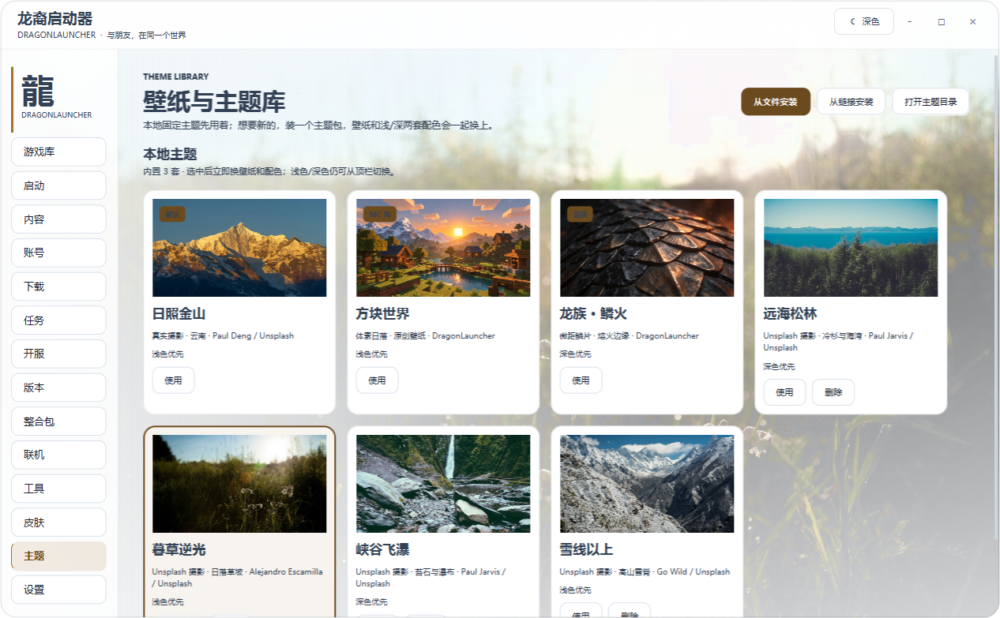
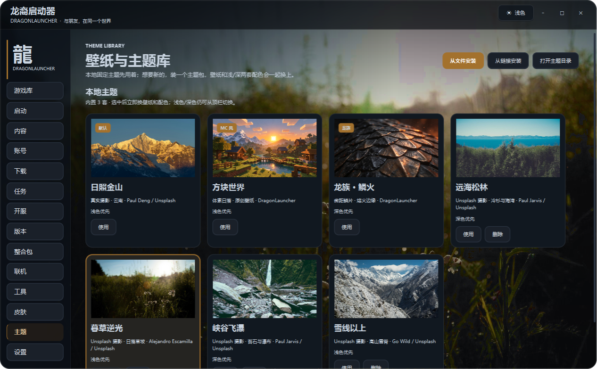
真实摄影：云南雪山日出，Paul Deng / Unsplash。暖色落在岩壁上，配白色雾面板最干净。
原创体素壁纸：日落照在草方块和屋顶上，和水边的橙色按钮是一套。开游戏前先看一眼自己的世界。
微距鳞片：每一片都压着熔火的边。给暗环境用，面板压得更深，文字对比度按深色重新配过。
都是 Unsplash 实拍，浅深两套配色由壁纸主色推出来。点「下载 zip」直接拿走，或者在启动器主题页点「在线主题库」一键安装。九套的清单在 themes.json，带大小和 SHA256。
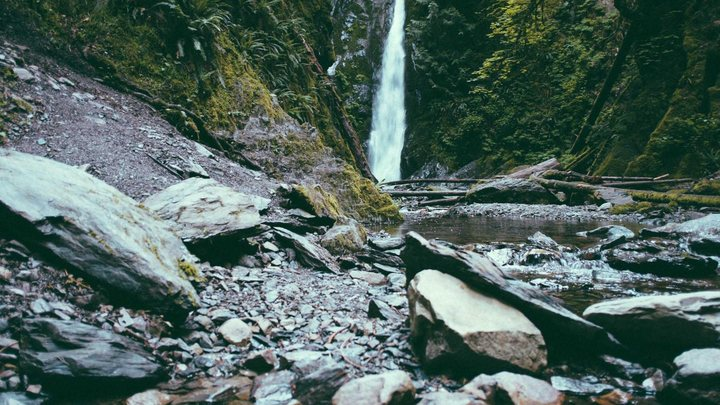
新九套主题装进 themes/，摄影主题约 0.2–0.75 MB，原创生成主题约 0.13–0.4 MB。装错或不喜欢，主题页点「删除」即可，只删对应文件夹。
id、显示名称、副标题、作者、标签、默认浅色或深色
一张壁纸，界面按窗口比例裁切并缓慢推移
浅色配色：面板、文字、边框、按钮
深色配色：同一套选择器，换一套颜色
主题页右上角有四个入口：从文件安装（选 zip）、从链接安装（填直链）、在线主题库（一键装九套）、打开主题目录（装好的都在 themes/ 下）。装错了直接删对应文件夹，重启就恢复内置三套。
SKIN LIBRARY
全部 Classic（4px 手臂）64×64 RGBA PNG，外层透明、基础层六面不透明。启动器皮肤页点「在线皮肤库」可以直接载入并预览；清单在 skins.json。
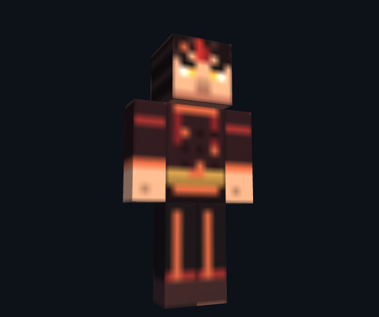
Classic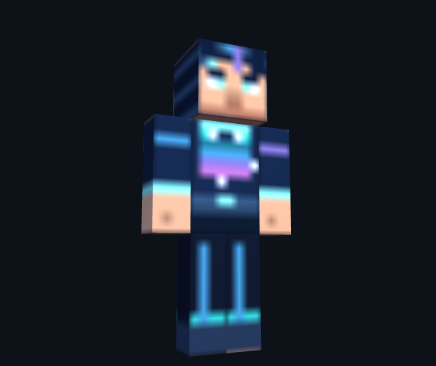
Classic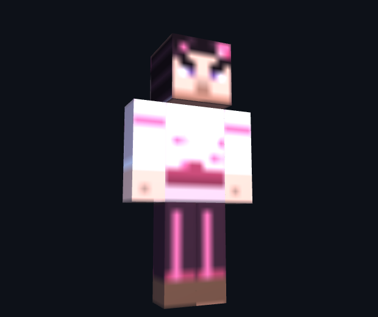
Classic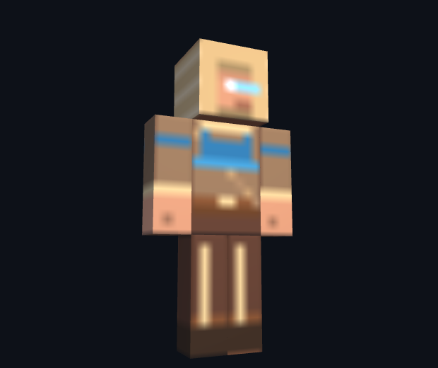
Classic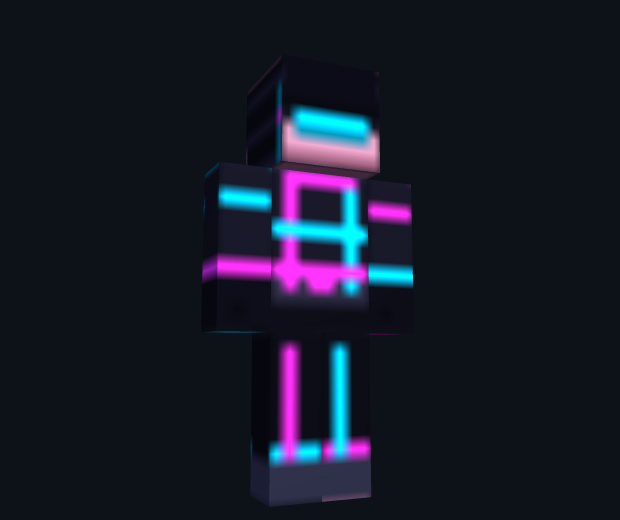
Classic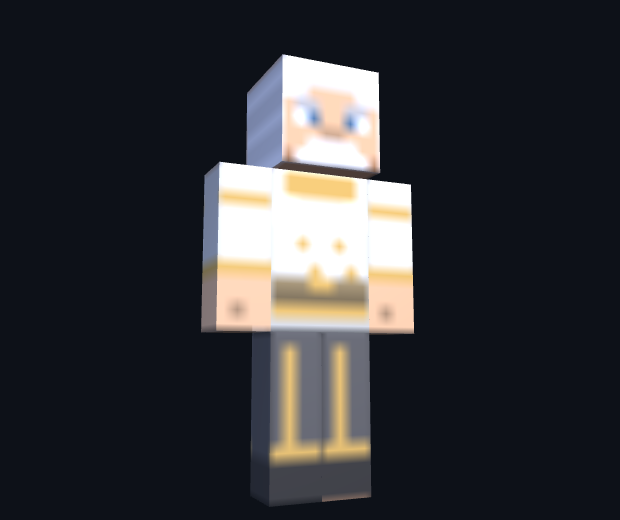
Classic下载
v0.8.1 皮肤修复版是当前推荐；v0.8.0 体验收口版、v0.7.0 实例管理版（补发）、v0.6.0 联机增强版、v0.4.0 主题库版、v0.3.0 双主题版和 v0.1.0 朋友原版作为历史版本保留。压缩包都挂在 GitHub Release 上，解压即用。
修好了皮肤页「保存到当前账号」把透明底刷成白色的问题；主题页新增「在线主题库」、皮肤页新增「在线皮肤库」，直接从下载站取九套主题和六套角色皮肤。其余功能与 v0.8.0 相同。
从 Release 下载CBBAC99BDC08E247ADA37D5CC7693A7204AE444F985A344E64F0C845788F8BED
在联机增强版之上补齐：实例分组、全局/实例初始内存、3D 皮肤预览、截图编辑器、authlib 外置登录、英文界面壳、CurseForge 可选 Key；四套摄影主题随包安装，服务端协议级联调通过。
从 Release 下载DD42636E197C74ADB24AA4DA00D6F775F83DC13D582013498E8163E316C73FE6
把 PCL2 的 3 个 Forge 实例、主存档和模组原样迁进来，并补齐游戏库、实例内容六页签、离线/微软账号、下载任务中心与开服向导。当时漏发 Release，这次补上。
从 Release 下载2F4D6BF50AF30534ACC91AD8C8655FE54695FE678745DC51AE9124267FDD68E0
在主题库版之上重做联机页：蓝盾（Radmin VPN）、陶瓦、直连 UPnP 三个 tab，配以工具箱、每实例 Java/内存/启动前备份和快速加入服务器。
从 Release 下载0FE4529B460936CA9C891B3762DAAA63A09BD5D01F41989B6E555F8EF37242EE
三套内置主题（日照金山 / 方块世界 / 龙族·鳞火）、浅深两套配色、主题包安装与删除。没有重做过的联机页和工具箱。
从 Release 下载74E634F723EC032EFC588544908AE73BF32A28E1F48DAF294744E85BD2B73A00
朋友最初发来的完整安装包，未做修改。适合对照，或者你想从原始版本继续改。
原版 runtime 缺少 jdk.crypto.ec 和 java.logging，部分网络下首次下载可能 SSL 握手失败，游戏也可能缺 Logger。遇到时请换主题库版。
从 Release 下载3BF80FDC55C1B8424C1809677DDD94EE74E0D4EC9CFACBCB0723A946CCDE5566
只有浅色和深色两套固定配色，没有主题库。功能和主题库版相同，适合对照“加主题库之前长什么样”。
从 Release 下载09929CB8CB2D0CB50B9AC53DDA600DF2C6B71B7F0D50A41BD6A4BAB8950B0CBA
校验文件：SHA256SUMS.txt；全部版本与附件在 Releases。解压后双击 DragonLauncher.exe，不要放进 C:\Program Files。
公共作品库
每发一个新版本，就多挂一个 Release 附件；这个区会自动把它列成卡片——哪一版、多大、哪天发的都写在卡上。谁发都不用改代码，刷新页面就能看到。
两条路：① GitHub 网页进「Releases → Draft a new release」，起一个新 tag，把 zip 拖进附件，点 Publish；② 在本地跑 上传新版本.ps1，一条命令完成打 tag、建 Release、上传和校验表更新。
第一次用：仓库主人把朋友加成 collaborator 并接受邀请；之后各发各的版本，互不覆盖。
正在读取版本库 …
版本怎么接力：每人发版时用一个新 tag（比如 v0.7.0-朋友），卡片按时间倒序，谁最新一眼看得出；下载后对比 app/app.jar 和 version.txt，就知道各自改了什么。
为什么这样最省事：GitHub Pages 只能托管静态文件，不能收 POST 上传。把「版本」放在 Releases、把「展示」放在 Pages，既不租服务器，也不用每次改 HTML；附件也不占仓库体积。
常见问题
启动器要下载所选版本的依赖库、native 和资源文件。1.20.1 的资源有几百 MB，取决于网络。下载完成后再次启动会直接进入。
主题决定壁纸和整体气质，浅色 / 深色决定同一套壁纸配哪一套配色。比如「龙族·鳞火」默认进深色，「日照金山」默认进浅色；选了主题之后，顶栏的「深色 / 浅色」按钮仍然可以单独切。
进「主题」页，点右上角「从文件安装」，选一个 zip。包里的根目录要有 theme.json、壁纸、light.css、dark.css；装好会在 themes/<id>/ 下，重启后还在。不想要就删掉那个文件夹，内置三套不会受影响。
能换壁纸和两套配色（面板、文字、按钮、边框），不能改布局和功能，也不能执行脚本。它只是替换样式，所以装来源不明的主题包也不会动到游戏文件。
建议双方都用 v0.8.0，并选择完全相同的游戏版本。一个人创建房间，另一个人输入房间号。版本不一致是联机失败最常见的原因；主题不同不影响联机。
原版自带的精简 Java runtime 里没有 jdk.crypto.ec，在部分网络环境下无法完成 TLS 握手；还缺 java.logging，进游戏可能报 NoClassDefFoundError。v0.2.0 之后的版本把运行时和模块补齐了。
网页上四步：仓库首页点「Releases」→「Draft a new release」→ 填一个新 tag（如 v0.7.0-friend）并上传 zip → 点 Publish。几秒后刷新网站，作品库就会多一张卡。装了 gh 的话，跑 上传新版本.ps1 -ZipPath 包.zip -Tag v0.7.0-friend 更省事。
先「换解析」：把 github.com 指到 140.82.114.3（管理员改 hosts，仓库里的 工具\修GitHub连接.ps1 会自动挑一个能通的 IP）。还不行就用命令行下载，它走 api.github.com，在国内一般能通：gh release download v0.8.0 --repo yeco2656-jpg/dragonlauncher。页面本身托管在 github.io，通常能打开。
可以，但需要仓库主人先把你加成 collaborator 并接受邀请。正式版本走 Releases，会自动成卡；packages/ 留作草稿区，临时放个包也会出现在列表末尾，但它会占仓库体积，建议只做中转。
当前版本使用离线用户名启动，适合单机和朋友之间的 Terracotta 联机；暂不支持 Microsoft 账号登录，因此不能进入需要正版验证的公共服务器。和朋友玩自己的世界不受影响。
默认在启动器自己的目录下，不会写入系统目录。你可以在设置里改游戏路径；整合包和版本会跟着那个路径走。